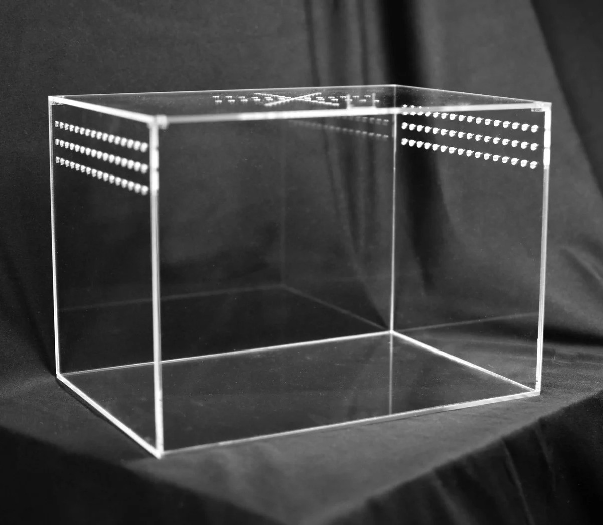

How to Build Enclosures
The main consideration for choosing what to build your enclosure out of is whether the tarantula going in it is arboreal, semi-arboreal, terrestrial or fossorial (an obligate burrower). Arboreal tarantulas are ones that would live in the trees or in higher brush if it was in the wild. Semi-arboreal tarantulas generally live on the ground, but may make webs high in their enclosures. Terrestrial tarantulas live on the ground or dig themselves a burrow underground. Fossorial tarantulas will require a lot of burrowing space as they spend most of their time underground. This means that an arboreal tarantula will require more space in the air, while a terrestrial tarantula would prefer an enclosure almost full of substrate. You will also want to consider the size of your tarantula to pick an enclosure for it.
Terrestrial or Semi-Arboreal Enclosure
Terrestrial
You want the enclosure to be 3 or more times as long as the tarantula's diagonal leg span (DLS) and 2 or more times high, but the substrate in the enclosure should be filled so the gap between the lid and the substrate is only 1.5 to 2 times the DLS.
Semi-Arboreal
You want the enclosure to be 3 or more times as long as the tarantula's diagonal leg span (DLS) and 2 or more times high, the substrate should fill about half of the enclosure.
Arboreal or Fossorial Enclosure
Arboreal
You want the enclosure to be 4 or more times as high as the tarantula's DLS and 2-3 times as wide, the substrate should fill around the bottom quarter of the enclosure.
Fossorial
You want the enclosure to be 4 or more times as high as the tarantula's DLS and 2-3 times as wide, the substrate should fill almost the entire enclosure, with about 1 of the tarantula's DLS of space between the lid and the substrate.
After the actual enclosure, you will need:
- Substrate
- Wood, like cork or cork bark (avoid pine or cedar options)
- A water bowl
- A hide or hides
- Humidity and temperature gauge
- Decorations (optional):
- Fake plants (avoid options with wire in them or options that are easily ripped)
- Real plants
- Rocks
- Skulls
- Legos
- Plastic decorations
- Etc.
Make sure to adequately fill the surface above the substrate with plenty of things for the tarantula to hide under or in, so that they dont become stressed. In arboreal and semi-arboreal enclosures make sure to add decorations in a way that the tarantula can't fall all the way from the roof to the floor. This will prevent the tarantula from injuring itself if it happens to fall.